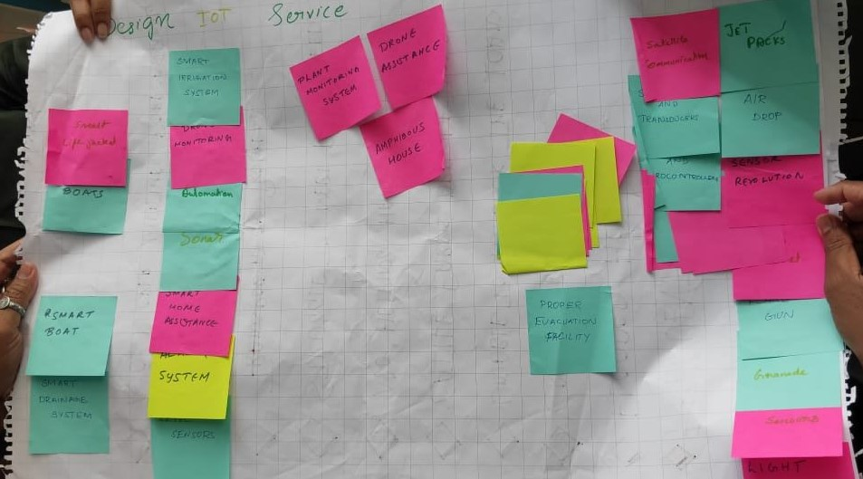
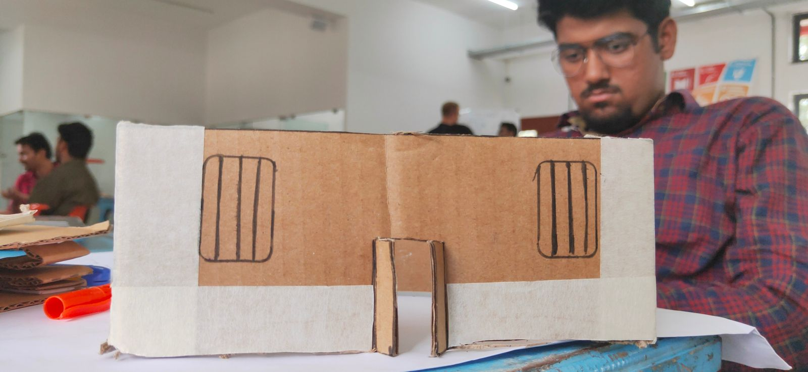
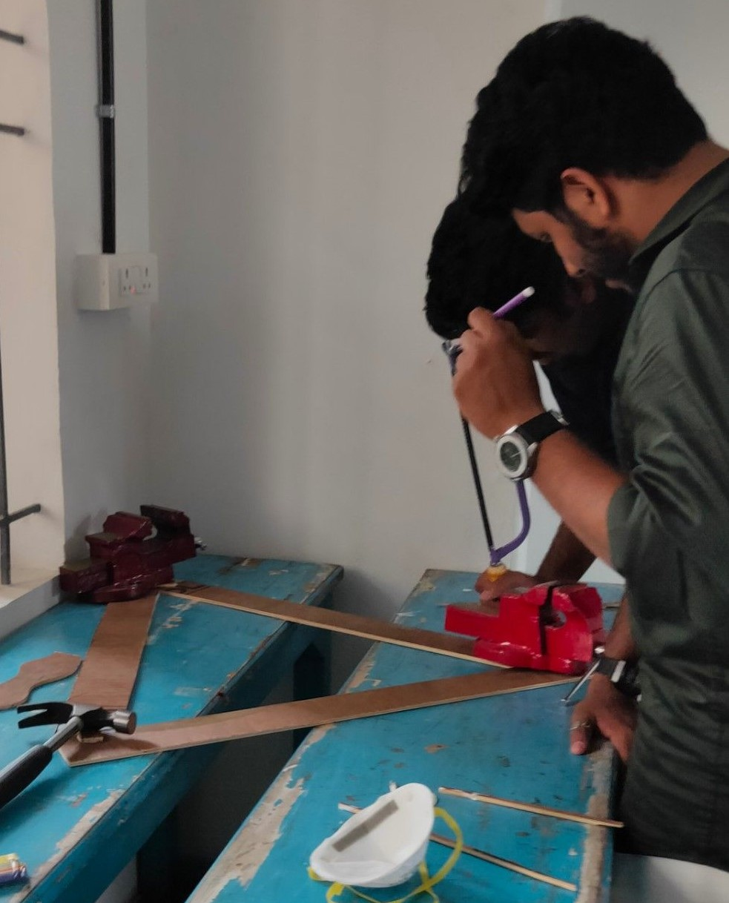
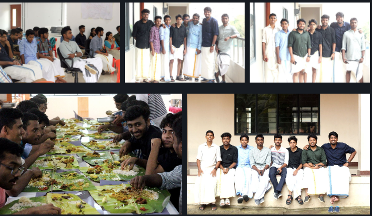
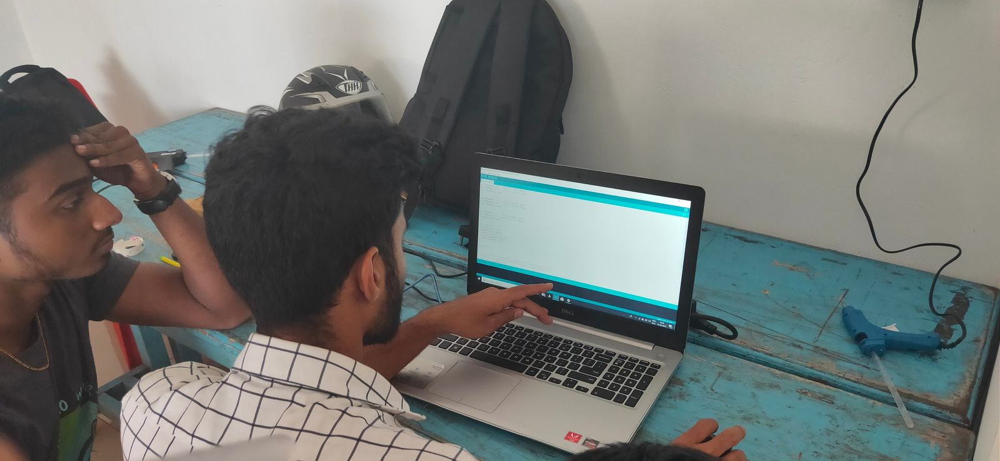
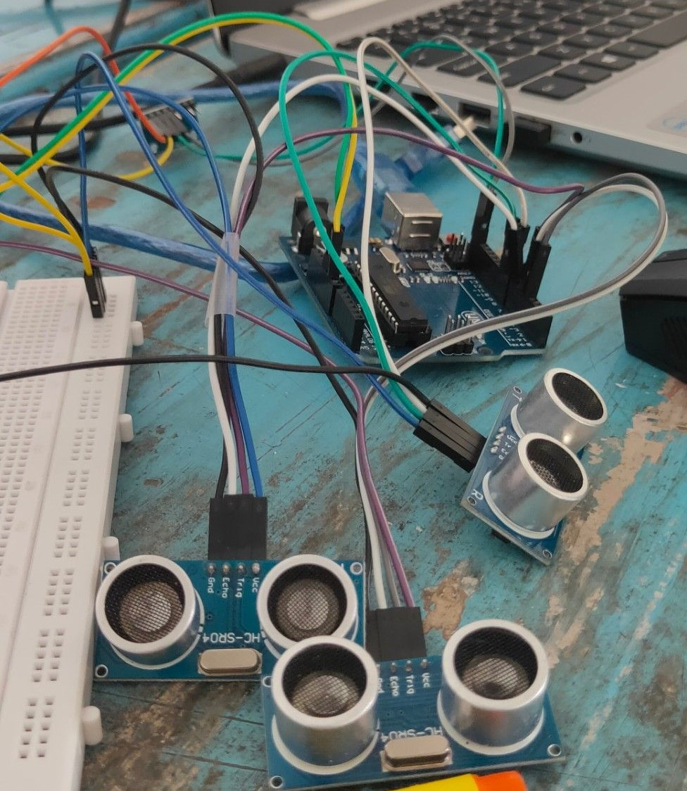
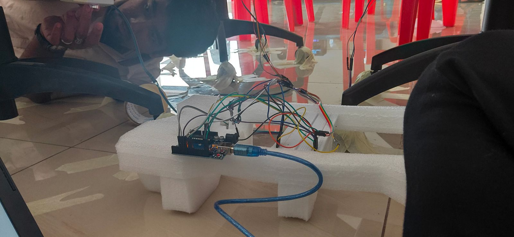

STEP_UP is concept prototype that can be use to lift houses, those affected by flood..
The Project was done in the First Capacity Building Program, We selected our topic on disaster management.
Problem Statement
Raghu is a farmer living in kuttanad, and his area is below the sea level. The biggest problem that raghu faces is frequent flooding. He earns for his livelihood by farming. He feels unsafe to stay his home, his house, crops, cattles all are at risk. The bank loans are also a big problem for him. Even though the government promised all kind of support, the need is still left empty-handed, no sought or technologies and weather forecast are accessible.
How may we help raghu find access to better information about natural disaster/ weather changes?
Brainstroming
Solution Brainstroming
We sat with Dr Varghese Sir and shared our idea of Amphibious house. Then he suggested us to work on the existing idea of lifting the concrete house making them smarter since our idea is theoretically perfect but not feasible.
Then we slightly changed our idea from Amphibious house to smart lifting mechanism of homes,
We came up with many ideas of making the lifting system smart and safe

Papper Prototype
Firstly we tried to build an house later on we discussed with our mentors and decided not to focus the prototype on building houses rather than on electronic circuits.
Using Tools
We utlized center workbench and tools to complete the prototype, we used playwoods to make the model base.
Onam Bash
We celebrated onam at the center.
Coding in progress
We used Arduino prototypig platform to build the electronics and used IMU sensor and UltraSonic Distance sensor's to get level data.
UltraSonic Distance sensors
We are almost done 90 percent with our prototype. We just need to install the sensors.
Installing sensors
We completed the prototype.
Tools Used
- Arduino Uno
- Arduino IDE
- Electronic Workbench
- CNC Workbench